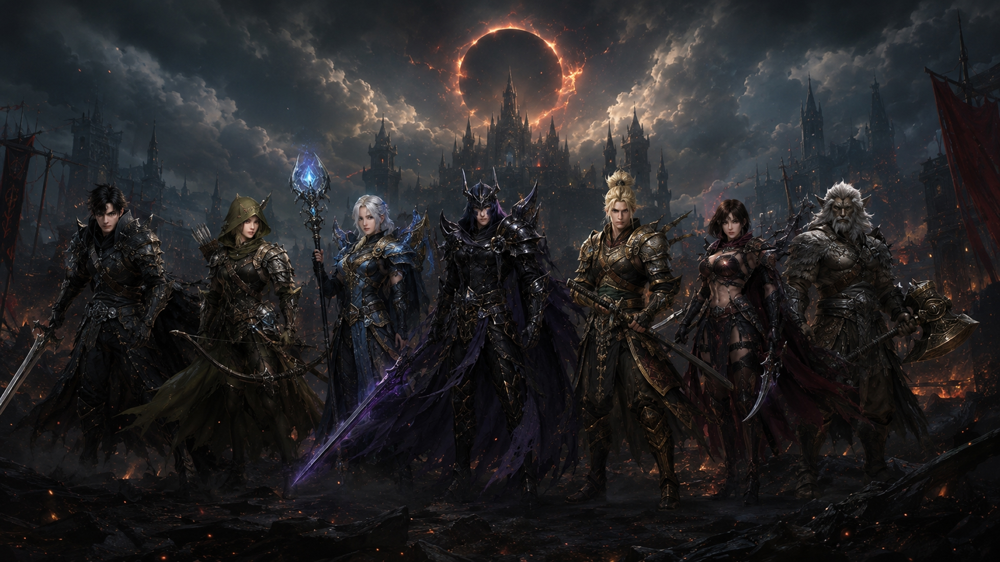
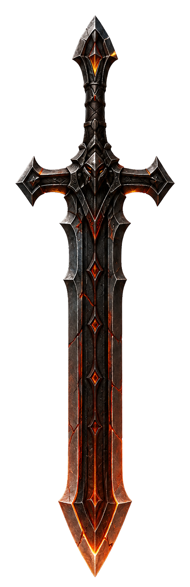
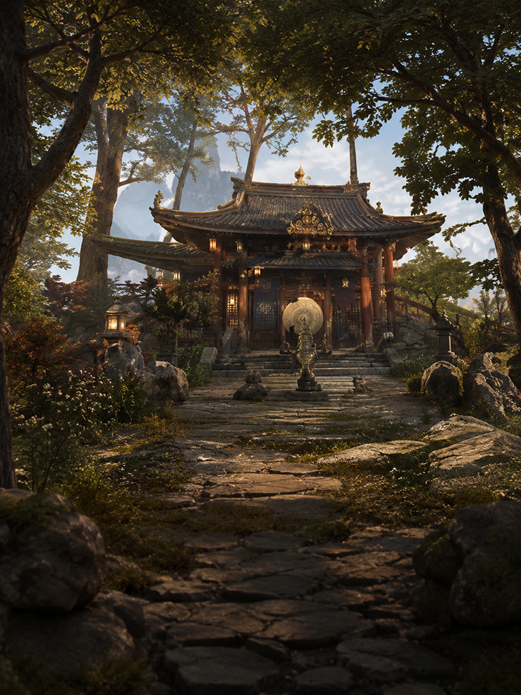
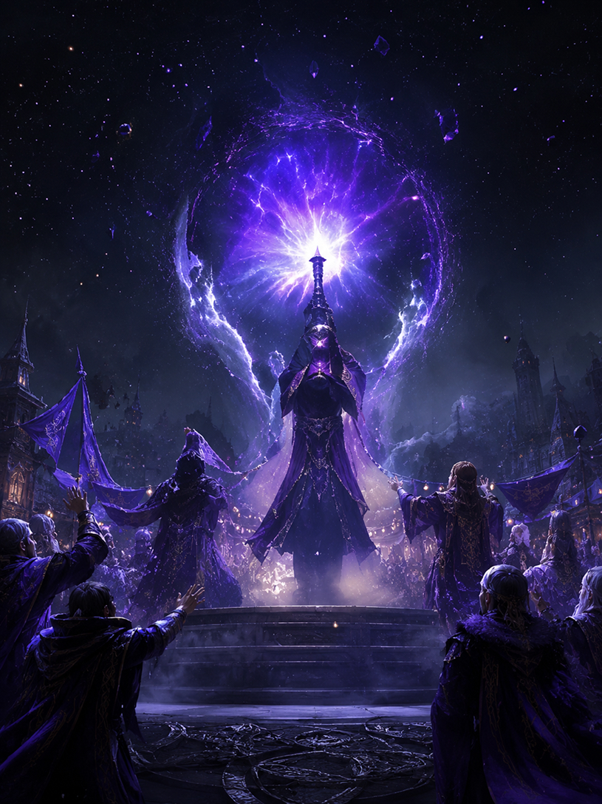

Project Info
- Project
- 검은사막 공식 홈페이지 리뉴얼 콘셉트
- Role
- 기획, UX 분석, 정보 구조 설계, UI 디자인, HTML/CSS/JavaScript 퍼블리싱
- Direction
- 게임 소개 → 클래스 탐색 → 콘텐츠 경험 → 다운로드로 이어지는 자연스러운 동선
Tools
- Figma
- Photoshop
- HTML
- CSS
- JavaScript
- GSAP
- AI Image Tool
◆ Game Website Renewal
Black Desert Renewal Case Study
게임의 첫인상은 플레이 버튼을 누르기 전부터 시작된다고 생각했습니다. 검은사막 리뉴얼은 방대한 세계관과 자유도 높은 MMORPG의 매력을 신규 유저도 쉽게 이해하고, 기존 유저도 빠르게 탐색할 수 있는 공식 사이트로 다시 정리한 프로젝트입니다.
MMORPG 공식 홈페이지는 이벤트, 공지, 업데이트, 클래스, 다운로드처럼 보여줘야 할 정보가 많습니다. 문제는 그 정보가 한꺼번에 노출될 때 신규 유저가 무엇부터 봐야 할지 놓치기 쉽다는 점이었습니다.
검은사막은 세계관과 비주얼이 강한 게임인 만큼, 정보를 나열하기 전에 먼저 “이 세계에 들어가 보고 싶다”는 감정을 만들어야 한다고 봤습니다.

Problem Definition
이벤트, 공지, 배너가 동시에 노출되면서 사용자가 핵심 콘텐츠를 빠르게 파악하기 어려웠습니다.
게임의 특징을 경험하기 전에 복잡한 정보 구조를 먼저 만나면서 이탈 가능성이 생겼습니다.
검은사막 특유의 광활한 풍경과 클래스의 분위기가 정보 영역에 밀려 약하게 느껴졌습니다.
신규 유저와 기존 유저가 원하는 정보가 섞여 있어 탐색 흐름을 다시 정리할 필요가 있었습니다.
Tools

작업하면서 가장 크게 잡은 기준은 하나였습니다.
가장 직관적인 전투 스타일을 앞세워 신규 유저가 쉽게 이해할 수 있는 진입 클래스로 구성했습니다.
거리감과 속도감을 살려 검은사막 전투의 넓은 선택지를 보여주는 카드로 배치했습니다.
어둠과 마법의 힘을 다루는 클래스로, 게임 특유의 신비로운 세계관을 강하게 표현했습니다.
부드러운 움직임 속에 강렬한 파괴력을 담아 검은사막 전투의 다양성을 보여주는 클래스입니다.
어둠의 기운을 검에 담아 빠르고 날카로운 전투를 펼치는 고난도 클래스로 배치했습니다.
캐릭터의 분위기와 액션 이미지를 함께 보여줘 클래스 선택의 재미를 강조했습니다.
강인한 체력과 묵직한 전투로 최전선을 지키는 클래스로, 웅장한 게임 분위기를 담았습니다.
빠른 이동과 기습 전투로 상대를 제압하는 클래스로, 사막 지역 특유의 분위기를 살렸습니다.
사용자는 정보를 보러 오지만, 결국 마음이 움직여야 플레이를 시작합니다.
그래서 화면을 공지와 배너의 묶음으로 보지 않고, 게임 세계로 들어가는 첫 장면으로 다시 바라봤습니다. 정보는 줄이지 않되, 처음 만나는 순서를 바꿔 설렘이 먼저 오도록 했습니다.
대형 비주얼과 어두운 그라데이션, 금빛 액센트로 첫 화면에서 게임의 분위기를 강하게 전달했습니다.
게임 소개에서 클래스 탐색, 콘텐츠 경험, 다운로드까지 이어지는 흐름을 하나의 이야기처럼 정리했습니다.
클래스별 전투 스타일과 이미지를 카드로 보여줘 사용자가 자신에게 맞는 캐릭터를 빠르게 상상할 수 있게 했습니다.
이벤트, 공지, 가이드 콘텐츠를 같은 무게로 나열하지 않고, 목적에 따라 노출 순서를 다시 나눴습니다.
게임 사이트는 화려할수록 읽는 순서가 무너지기 쉽습니다. 그래서 컬러와 타입은 강하게 가져가되, 카드와 리스트, CTA 같은 기본 컴포넌트는 반복 가능한 규칙으로 정리했습니다.


“대규모 콘텐츠를 사용자 중심으로 다시 해석하고, 브랜드의 세계관을 웹 경험으로 확장해본 프로젝트였습니다.”
이번 작업을 하면서 게임 웹사이트는 단순한 정보 전달 채널이 아니라, 플레이어의 기대감과 감정을 끌어올리는 첫 경험이라는 점을 많이 느꼈습니다.
검은사막처럼 콘텐츠가 큰 서비스는 “무엇을 더 넣을까”보다 “무엇을 먼저 보게 할까”가 더 중요했습니다. 방대한 정보를 줄이는 대신 순서를 다시 잡고, 세계관을 먼저 경험하게 만드는 쪽으로 방향을 잡았습니다.